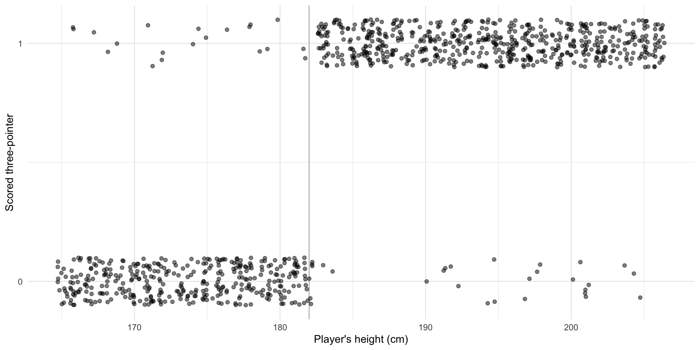
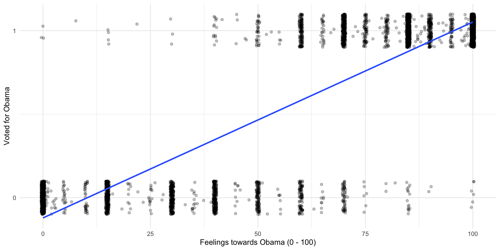
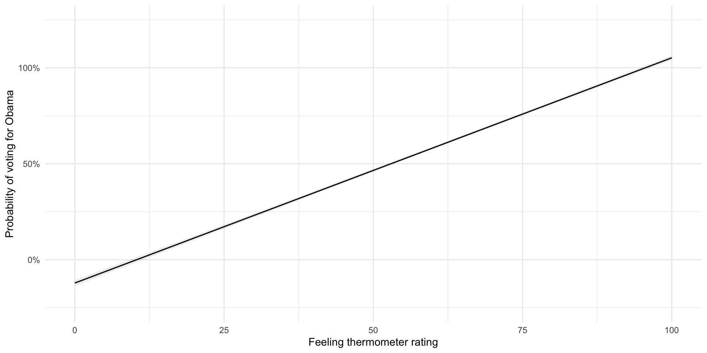
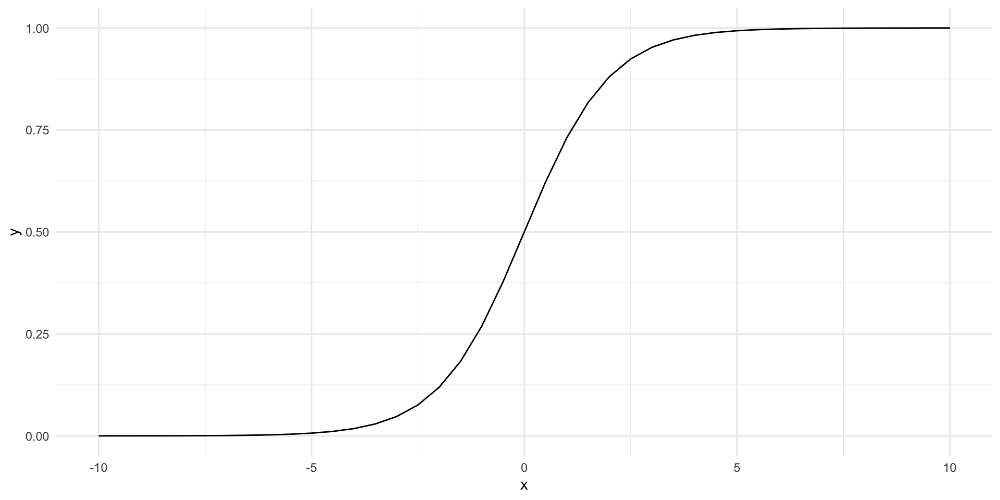
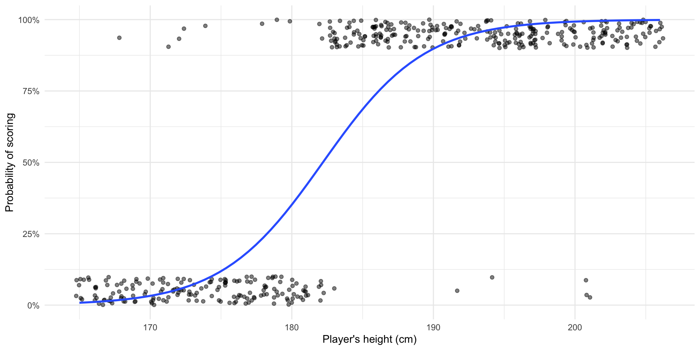
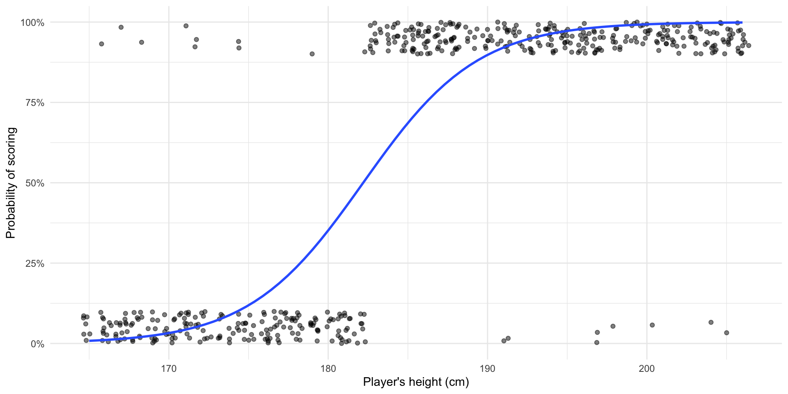
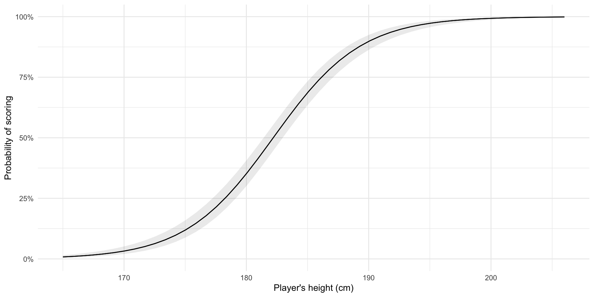

library(tidyverse)
library(modelsummary)
library(scales)
library(broom)
library(marginaleffects)
set.seed(1234)Binary outcomes
Warning
THIS IS A DRAFT.
Introduction to binary outcomes
We often want to better understand binary outcomes: voted, or not; at war, or not; signed a treaty, or not.
Imagine that if you are over six feet tall, there is a 80% chance that you will score a three-point field goal on any given attempt. In other words, people over six feet tall score a three-pointer 95% of the time they attempt one. Imagine also that if you are under six feet tall, your luck is reversed. There is only a 5% chance that you score a three-pointer when you attempt one.
Let’s make some data to reflect this world. In 2021 (the latest data I get from a very cursory Google search)1, the tallest player in the WNBA is Brittney Griner who is 6.9 feet (206 cm) tall. The shortest player, Leilani Mitchell, is 5.5 feet (165 cm) tall. We will use these women as our plausible range of players.
Let’s take 1,000 hypothetical randomly-selected players ranging from 165 cms to 206 cms tall and ask them to take a shot from the three-point score line. We will record whether or not they score.
players_height <- sample(165:206, size = 1000, replace = T)Remember, if they are taller than 6 feet (or 183 cms), they will score 95% of the time. If they are less than 6 feet, they will only score 5% of the time.
three_pointers <- tibble(
height = players_height,
scored = if_else(height < 183,
sample(0:1, 1000, replace = T, prob = c(0.95, 0.05)),
sample(0:1, 1000, replace = T, prob = c(0.05, 0.95)))
)Let’s look at how they went:
ggplot(three_pointers, aes(x = height, y = scored)) +
geom_vline(xintercept = 182, colour = "grey") +
geom_jitter(alpha = 0.5,
height = 0.1) +
theme_minimal() +
labs(x = "Player's height (cm)",
y = "Scored three-pointer") +
scale_y_continuous(n.breaks = 2)
So, it looks like some of our taller plays (those above the grey line) were unlucky and missed. Happily some of our shorter players beat the odds!
If I asked you to predict whether or not a player would score a three-pointer and you knew this fact that taller players scored 95% of the time whilst shorter players only scored 5% of the time, you might follow up and ask how tall the player in question is. It seems to be an important predictor of her ability to score!
In other words, if I wanted to build a model predicting the likelihood any given player would score a three-pointer, I would include in that model the player’s height as a variable.
Let’s do that!
Linear probability model (LMP)
Let’s start simply by drawing a straight line between these two clusters of points. As with all linear regression models, we want to draw the line that minimizes the distance between itself and all of the observed points.
ggplot(three_pointers, aes(x = height, y = scored)) +
geom_jitter(alpha = 0.5,
height = 0.1) +
geom_smooth(method = "lm", se = F) +
theme_minimal() +
labs(x = "Player's height (cm)",
y = "Probability of scoring") +
scale_y_continuous(label = percent, limits = c(0, 1))
m_lpm <- lm(scored ~ height, data = three_pointers)
modelsummary(m_lpm, coef_rename = c("height" = "Height (cm)"), stars = T)| (1) | |
|---|---|
| (Intercept) | −5.269*** |
| (0.153) | |
| Height (cm) | 0.032*** |
| (0.001) | |
| Num.Obs. | 1000 |
| R2 | 0.596 |
| R2 Adj. | 0.595 |
| AIC | 507.4 |
| BIC | 522.1 |
| Log.Lik. | −250.693 |
| F | 1471.377 |
| RMSE | 0.31 |
| + p < 0.1, * p < 0.05, ** p < 0.01, *** p < 0.001 |
Although this looks a lot like our familiar linear regression model, we interpret its estimates differently. Here, instead of estimating the value of the outcome variable, we are estimating the probability that the outcome variable will be equal to one (or that our player scores).
So, we have found that players that are one centimeter taller than their teammates are, on average, 3% more like to score a three-pointer than those shorter team mates.
Our model predicts that a player who is 170 cms tall will score 9% of the time. It predicts that a player who is 10 cms taller will score 41% of the time. Finally, it predicts that a player who is another 10 cms taller will score 72% of the time. More succintly:
plot_predictions(m_lpm, condition = "height") +
theme_minimal() +
labs(x = "Player's height (cm)",
y = "Probability of scoring") +
scale_y_continuous(label = percent, limits = c(0, 1))
Hmm, this doesn’t really reflect the hypothetical world we set up very well…
We said that if you were above a cut off point (6 feet) then you had an 95% chance of scoring. If you were below this height threshold, you only had a 5% chance of scoring. But this LPM assumes a linear (constant) increase across all heights.
Also, this model predicts probabilities of scoring that are more than 100% of the time and less than 0% if you are less than 170cm tall. That’s very dire odds for some current players…
Happily, we can do better (…than economists).
Latent variable approach
When we are dealing with binary outcomes, we can only observe 1 or 0, success or failure. This makes this whole prediction thing tricky!
For example, lots of political pundits will attempt to predict the outcome of this year’s US Presidential Election. They will say that they predict that either President Biden or Mr Trump will win.
Those who build complex models to help them in this will likely put some percentage against their prediction. For example, someone might say that they predict that President Biden will hold office with an 85% chance. What they are saying is that, if you were able to run 100 different versions of the 2024 US Presidential Election, their model suggests that President Biden wins 85 of those 100 elections. That means that their model also predicts that Mr Trump will win 15 of those 100 elections.
We can only observe the outcome: Biden or Trump. We cannot observe this underlying probability: 85% Biden and 15% Trump. But we assume that underlying continuous relationship exists! This is logic behind the latent variable approach.
Going back to our basketball players: the latent variable approach assumes that some continuous linear relationship exists between our observed outcome, scored or did not score, and our independent variable: height. This continuous relationship is driven by an unobserved variable: \(Z\). Formally:
\[ z_i = X_i\beta + \epsilon_i \]
This is a linear model! In fact, it’s the linear model you have been working with for two semesters. Great!
But as usual, the interesting (and tricky) part of this model is that error term: \(\epsilon\). What shape does it take? In a linear regression, we assume that it is normally distributed and centered at zero. When we have a binary outcome, we assume that it takes on a different shape. Which shape? Well, you get to pick your poison: logit or probit?
Logistic regression
Logistic regression is a favourite among international relations scholars. It has lots of very useful features.
First, it is bounded by 0 and 1 (just like our outcome). Second, it allows for a varying impact of a change in \(X\) on the probability that our outcome is a success.
Formally, the inverse logistic function is:
\[ Pr(Y = 1 | X) = logit^{-1}(X) = \frac{e^X}{1 + e^X} \]
But don’t worry too much about that. Let’s instead look at its shape:
tibble(x = seq(-10, 10, by = 0.5),
y = plogis(x)) |>
ggplot(aes(x = x, y = y)) +
geom_line() +
theme_minimal()
This is great! The outcome (probability of success) is bounded between 0 and 1 as all probabilities are. Further, our cut-off point (in this general demonstration, 0) is clearly defined.
Let’s fit a logistic regression model against our basketball players’ scoring efforts:
ggplot(three_pointers, aes(x = height, y = scored)) +
geom_jitter(alpha = 0.5,
height = 0.1) +
geom_smooth(method = "glm", se = F, method.args = list(family = binomial(link = "logit"))) +
theme_minimal() +
labs(x = "Player's height (cm)",
y = "Probability of scoring") +
scale_y_continuous(label = percent, limits = c(0, 1))
We can fit this model using the following:
m_lr <- glm(scored ~ height, data = three_pointers, family = binomial(link = "logit"))
modelsummary(m_lr,
coef_rename = c("height" = "Height (cm)"),
stars = T)| (1) | |
|---|---|
| (Intercept) | −50.744*** |
| (3.203) | |
| Height (cm) | 0.279*** |
| (0.018) | |
| Num.Obs. | 1000 |
| AIC | 549.1 |
| BIC | 558.9 |
| Log.Lik. | −272.543 |
| F | 252.357 |
| RMSE | 0.26 |
| + p < 0.1, * p < 0.05, ** p < 0.01, *** p < 0.001 |
Interpreting logistic regression coefficients
The coefficients presented above are log odds ratios. We can easily interpret their statistical significance and their sign. For example, we learn that as a player’s height increases, so too does her probability of scoring a three-pointer. We also know that the probability that we would pull a random sample from a population in which a player’s height has no bearing on her ability to score a three pointer is very small. Sadly, that’s about all that we can easily get from the regression table provided above.
Remember that logit (and probit) models are simply transformed linear models. We take our linear model of the relationship between scoring a three pointer and a player’s height and reshape it to better predict probabilities (bound between 0 and 1, with varying effects of changes of height on probability of success). Similarly, we can reshape these coefficients to make them easier to interpret.
Odds ratios
The regression coefficient provided above is a log odds ratio. Log-transformed variables are really hard to interpret. So, let’s get rid of that log. The opposite operation to taking the logarithm of a number is to take the exponential of it. To demonstrate:
tibble(x = 1:5,
log_x = log(x),
exp_log_x = exp(log_x))# A tibble: 5 × 3
x log_x exp_log_x
<int> <dbl> <dbl>
1 1 0 1
2 2 0.693 2
3 3 1.10 3
4 4 1.39 4
5 5 1.61 5So, exponentiating the log odd ratio will get us the odds ratio. The odds ratio is much easier to interpret. If the probability of success of an outcome is \(p\) and, therefore, the probability of failure is \(1-p\), then , the the odds of success is \(\frac{p}{1-p}\). Now, dividing two odds by each other gives you their odds ratio.
For example, when the odds ratio is 1, the odds of success are the same as the odds of failure (\(\frac{0.5}{0.5} = 1\)). When the odds ratio is greater than 1, the odds of success are greater than the odds of failure (for example, \(\frac{0.8}{0.2} = 4\)). Where the odds ratio of success is four, the odds of success are four times higher than the odds of failure.
Getting back to our model, the odds ratio that a player will score is:
\[ e^{0.302} = 1.35 \]
Therefore, if we increase a player’s height by one centimeter, the odds that she will score increases by 0.35 (or \(1 - 1.35\)).
Happily, modelsummary::modelsummary(exponentiate = T) will help us out here:
modelsummary(m_lr,
exponentiate = T,
coef_rename = c("height" = "Height (cm)"),
stars = T)| (1) | |
|---|---|
| (Intercept) | 0.000*** |
| (0.000) | |
| Height (cm) | 1.321*** |
| (0.023) | |
| Num.Obs. | 1000 |
| AIC | 549.1 |
| BIC | 558.9 |
| Log.Lik. | −272.543 |
| F | 252.357 |
| RMSE | 0.26 |
| + p < 0.1, * p < 0.05, ** p < 0.01, *** p < 0.001 |
And we can also get these results programmatically using broom::tidy():
tidy(m_lr, exponentiate = T)# A tibble: 2 × 5
term estimate std.error statistic p.value
<chr> <dbl> <dbl> <dbl> <dbl>
1 (Intercept) 9.16e-23 3.20 -15.8 1.62e-56
2 height 1.32e+ 0 0.0175 15.9 7.95e-57Predicted probabilities
Odds ratios are certainly easier to interpret than log odds ratios, but they are still a little awkward. It is easier again to discuss the effects of changing our independent variables of interest in terms of probabilities, rather than odds.
Remember, the odds ratio is simply the odds of success divided by the odds of failure:
\[ OR = \frac{\frac{p}{1-p}}{\frac{1-p}{p}} \]
We are interested in getting the odds of success (\(p\)). To get this, we do the following:
\[ p = \frac{OR}{1+OR} \]
Or, more generally:
\[ Pr(Y = 1 | X) = \frac{e^{X\beta}}{1 + e^{X\beta}} \]
Or, more specifically:
\[ Pr(scored = 1 | height) = \frac{e^{−50.744 + 0.279height + \epsilon}}{1 + e^{−50.744 + 0.279height + \epsilon}} \]
Importantly, we need to know our player’s height to predict her probability of success. This makes sense! The slope of our model is not constant:

When a player is 170 cm tall, our model predicts that she will score a three-pointer 3.5 percent of the time.
How did I get that?
\[ Pr(scored = 1 | height) = \frac{e^{−50.744 + 0.279height + \epsilon}}{1 + e^{−50.744 + 0.279height + \epsilon}} = \frac{e^{−50.744 + 0.279*170}}{1 + e^{−50.744 + 0.279*170}} = \frac{.036}{1.036} = 0.035 \]
When a player is 180 cm tall, our model predicts that she will score a three-pointer 27.5 percent of the time.
When a player is 190 cm tall, our model predicts that she will score a three-pointer 88.6 percent of the time.
Notice that we are increasing the player’s height by the same amount each time, but the increase in her probability of success from this constant increase is different. Here is the predicted probability of success across our range of players’ heights:
plot_predictions(m_lr, condition = "height") +
theme_minimal() +
labs(x = "Player's height (cm)",
y = "Probability of scoring") +
scale_y_continuous(label = percent, limits = c(0, 1))
Interpreting the intercept
As usual, the intercept should be interpreted as the expected value when all independent variables are set to 0. This is simple to interpret in terms of the probability of success. Remember:
\[ Pr(Y = 1 | X) = \frac{e^X}{1 + e^X} \]
When height = 0:
\[ Pr(Y = 1 | X) = \frac{e^{\beta_0}}{1 + e^{\beta_0}} = \frac{e^{−50.744}}{1 + e^{−50.744}} = A\ very\ small\ number! \]
Footnotes
I’m sorry… it’s just not as good as AFL…↩︎